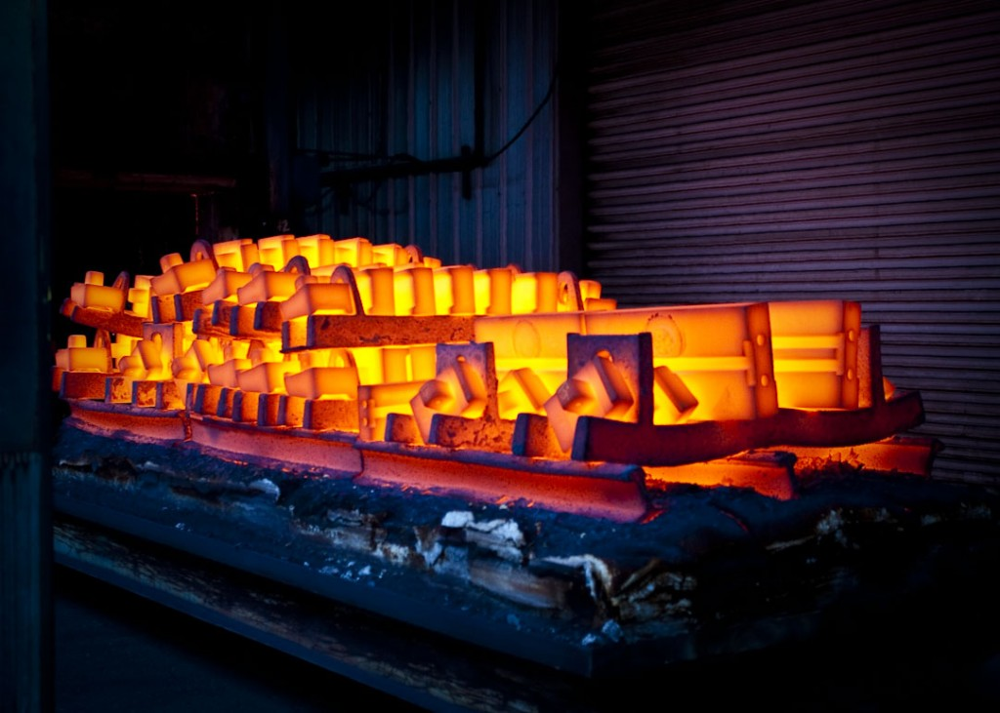

Recocido: Mejora de la Maquinabilidad y la Ductilidad
El recocido es uno de los tratamientos térmicos más antiguos y esenciales en la metalurgia. En este proceso, el acero se calienta a una temperatura específica, dependiendo de su composición (generalmente entre 700 y 950 °C), y se mantiene a esa temperatura durante un período definido para después enfriarse lentamente, generalmente en un horno. El objetivo principal del recocido es suavizar el material. Este tratamiento reduce la dureza del acero, haciéndolo más dúctil y maleable, lo cual es crucial para facilitar operaciones de mecanizado, estampado o doblado. Además, el recocido alivia las tensiones internas generadas durante procesos como la laminación en frío o el trabajo en caliente, lo que ayuda a evitar deformaciones o fisuras en etapas posteriores. Una aplicación típica del recocido es en láminas de acero que se utilizarán para fabricar electrodomésticos, piezas automotrices o estructuras metálicas. También es útil en componentes que requieren ajustes dimensionales después de la producción inicial.
